把前面學的全部組合起來，做一個真正能用的小工具。
自動化流程總覽


範例：自動清資料 + 產樞紐 + 寄報表
Sub 月報自動化()
Application.ScreenUpdating = False '關閉螢幕更新加速
' 1. 開啟原始資料
Workbooks.Open "~/Desktop/原始資料.xlsx"
' 2. 清空白列
Columns("A").SpecialCells(xlCellTypeBlanks).EntireRow.Delete
' 3. 套用篩選
Range("A1").AutoFilter Field:=2, Criteria1:=">1000"
' 4. 複製到月報
' ... 你的處理邏輯
' 5. 儲存
ActiveWorkbook.SaveAs "~/Desktop/月報_" & Format(Date, "yyyymm") & ".xlsx"
Application.ScreenUpdating = True
MsgBox "完成！"
End Sub加速三件事
① Application.ScreenUpdating = False（關螢幕更新）② Application.Calculation = xlCalculationManual（暫停自動計算）③ 用陣列代替逐格操作。
按鈕綁巨集
開發人員 → 插入 → 按鈕 → 拖出來 → 指定巨集。使用者就能一鍵執行。